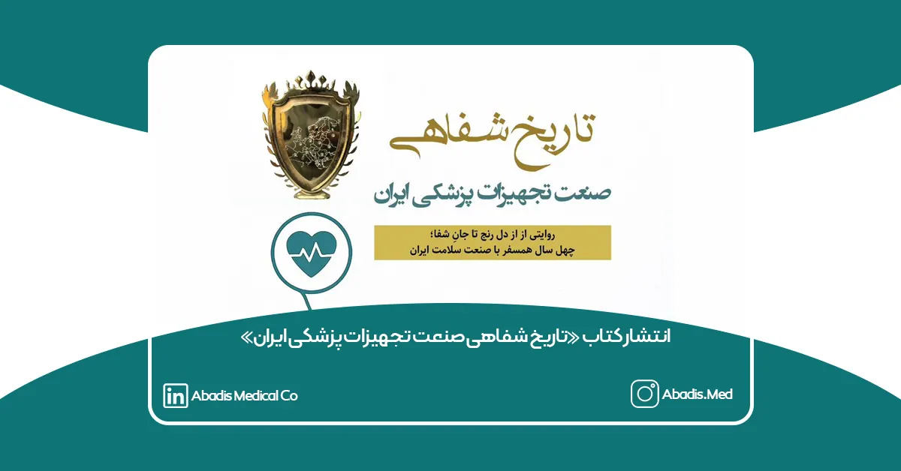

انتشار کتاب «تاریخ شفاهی صنعت تجهیزات پزشکی ایران» با روایت چهل ساله از دل رنج تا جانِ شفا
کتاب «تاریخ شفاهی صنعت تجهیزات پزشکی ایران» تألیف دکتر محمدجعفر حسینی شیرازی، پژوهشگر برجسته حوزه سلامت و دارنده نشان ارسطو از اتحادیه اروپا، منتشر شد. این اثر ارزشمند روایتی دقیق، تحلیلی و خواندنی از چهار دهه تحولات، چالشها و دستاوردهای صنعت تجهیزات پزشکی کشور ارائه میدهد و یکی از نخستین منابع مستقل و جامع در این حوزه به شمار میرود.
روی جلد کتاب، عبارت «روایتی از دل رنج تا جانِ شفا» آمده است؛ شعاری که بهخوبی مضمون اثر را نشان میدهد: سفری طولانی و پر فراز و نشیب در مسیر توسعه فناوریهای پزشکی و مشارکت فعال صنعت در ارتقای سلامت جامعه.
انتشار این کتاب میتواند برای مدیران صنعتی، پژوهشگران حوزه سلامت، شرکتهای دانشبنیان، دانشجویان تجهیزات پزشکی و سیاستگذاران حوزه سلامت، یک منبع مرجع و قابلاتکا باشد.
مخازن طبی آبادیس انتشار این اثر ارزشمند را به جامعه سلامت کشور، فعالان صنعت تجهیزات پزشکی و استاد ارجمند دکتر محمدجعفر حسینی شیرازی تبریک میگوید و امیدوار است این کتاب گامی مهم در ارتقای دانش و ثبت تجربههای ملی در حوزه سلامت باشد.
اشاره ویژه به مخازن طبی آبادیس در صفحه ۳۴۵
یکی از نکات قابلتوجه این کتاب، ذکر نام و عملکرد شرکت دانشبنیان «مخازن طبی آبادیس» در صفحه ۳۴۵ است.
در این بخش، نویسنده به نقش این شرکت در نوآوری، استانداردسازی تولید داخلی، توسعه محصولات یکبارمصرف بیمارستانی و ارتقای ایمنی سیستمهای ساکشن اشاره میکند و آبادیس را یکی از نمونههای موفق در مسیر توانمندسازی صنعت تجهیزات پزشکی ایران معرفی میکند.
این اشاره، نشاندهنده اعتبار تخصصی و نقش اثرگذار آبادیس در تاریخ تحولات این صنعت است.
برای دانلود تصویری کتاب روی این لینک کلیک نمایید.
و برای برای دانلود صوتی کتاب روی این لینک کلیک نمایید.